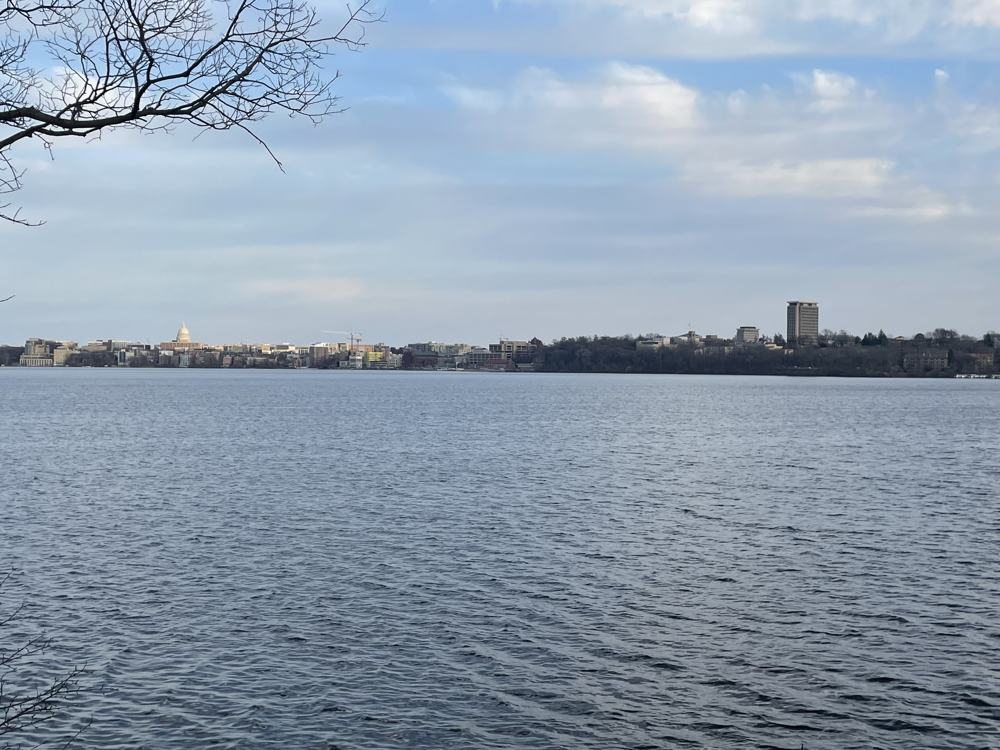
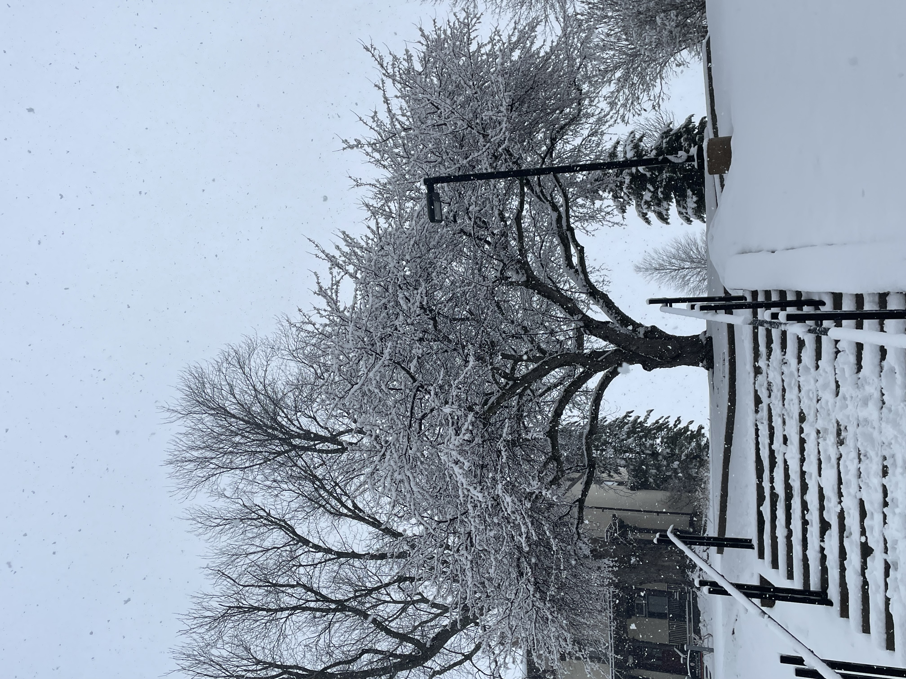
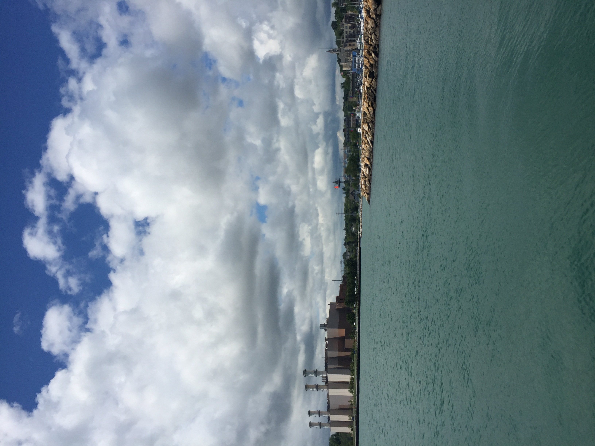
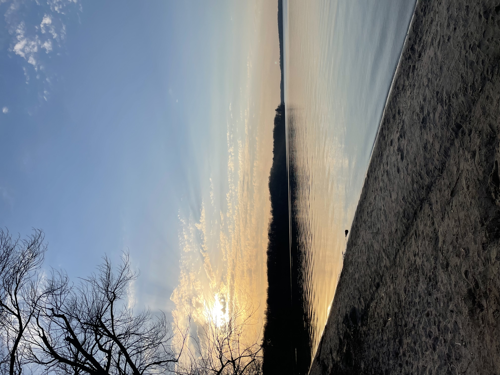

Geoscience In My Daily Life

I was born and raised in Milwaukee, but I go to school in Madison, so I’ve been able to experience firsthand how the atmosphere influences my daily life through constant changes in weather and climate. Wisconsin has very cold winters and warm and humid summers.
An interesting fact about Wisconsin is that it’s located right next to Lake Michigan to the east and Lake Superior to the north which make up part of two of the five Great Lakes. These lakes have a strong influence on Wisconsin weather and climate especially around the Milwaukee area where I’m from. For example, Lake Michigan often has a strong influence on severe weather events such as heavy rain, high winds, and erosion. These weather events can also be seen in Madison as the city is between Lake Mendota and Lake Monona.
Climate change is also rising around the world but as a Wisconsin resident I’ve been able to notice small changes over the last two decades. For example, there has been more intense rainfall causing increased flooding especially in areas like Milwaukee. Water temperatures are also rising in the lakes which reduces the amount of time lakes are frozen over and can also cause algal blooms like cyanobacteria which has been seen in Lake Mendota.

This picture was taken in Madison, it shows a tree covered in snow during a Wisconsin winter. In recent years, climate change has made winters warmer and shorter.

This picture was also taken in Madison, it shows how Wisconsin has seasons like Fall which is being shown by the changing leaf colors because of specific climate conditions.

This picture was taken in Port Washington, Wisconsin. It overlooks Lake Michigan making it a city that is more prone to severe weather events because of the lake effects. In the background, you can see the Port Washington Generating Station which is the most thermally efficient generating power plant in Wisconsin.

Caption for image 4